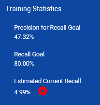

When a new training batch for an issue is added, a new training round/iteration is started.
Each time a new training batch is added to an issue, the training batch in ZyLAB One will be refreshed. Reviewers will only see the new documents. Documents reviewed in previous batches remain in the project (together, they form the training set). You will be able to find them, but they will not be part of the training batch reviewers are currently working on.
A training batch can be divided in several review (sub-)batches.
The Recall Goal is not reached yet.
The Recall Goal is set when defining a project with a Validation Set.
In the Assisted Review Progress tab, monitor if the Recall Goal is reached or nearly reached (Estimated Current Recall):

The marginal precision is between 10% and 80% (0,1 and 0,8).
The marginal precision is the precision of the last reviewed training batch added to the training set, also called the return set. The marginal precision usually rises to a high value (for example, 67%) in the beginning of the process.
View the marginal precision in the Precision of Return Set graph.
The Gain Curve has not reached its plateau yet.
The curve of the Precision by Recall graph has not reached the desired precision and recall yet, or there is still improvement.
Precision and recall are both below the values that were agreed earlier (for example, during meet-and-confer sessions).